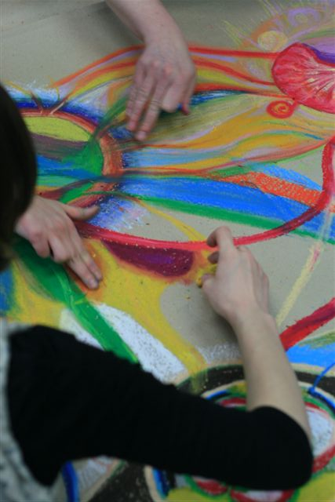

Arteterapia – nowatorska forma psychoterapii, która polega na wykorzystaniu szeroko pojętej sztuki. Zapewnia dużą elastyczność w doborze stosowanych narzędzi, w związku z czym pozwala uwzględnić indywidualne predyspozycje i uzdolnienia każdego z uczestników zajęć. Można wyróżnić kilka głównych kierunków w arteterapii: choreoterapię (terapia przez ruch), muzykoterapię (terapia z wykorzystaniem muzyki), biblioterapię (terapia z użyciem literatury), teatroterapię i psychodramę (terapia bazująca na technikach teatralnych), plastykoterapię (terapia z zastosowaniem działań plastycznych) oraz chromoterapię (terapię poprzez kolory). Często łączy się różne metody w celu uzyskania pełniejszego, trwalszego efektu leczenia. Arteterapia nie wymaga wcześniejszego przygotowania teoretycznego ani praktycznego z obszaru sztuki, na którym bazuje. Nie skupia się bowiem na walorach estetycznych, czy artystycznych powstałych prac a raczej na ich wartości ekspresyjnej i emocjonalnej.
Zakłada się, że każdy człowiek posiada naturalny potencjał twórczy, który może realizować w sprzyjających warunkach. Sztuka może być rodzajem języka symbolicznego, który pozwoli wyrazić to, czego nie sposób nazwać, co wykracza swoim rozmiarem poza słowa. Kiedy tradycyjny język zawodzi proponuje język alternatywny, metaforyczny. Może nim być – ruch, forma, faktura, kolor. Terapia przez sztukę pozwala otworzyć drzwi świata wewnętrznego, do których nie pasują standardowe klucze. Jej ogromnym atutem jest to, że dostosowuje metody pracy do potrzeb uczestników, nie odwrotnie. W akcie twórczym dochodzi do konstruktywnego wyładowania aktualnych konfliktów wewnętrznych, problemów i codziennych frustracji. Uczestnicy zajęć mogą doświadczyć emocjonalnego oczyszczenia, swoistego katharsis.
Arteterapia jest z powodzeniem stosowana jako forma wprowadzająca do standardowej terapii, ponieważ przez niekonwencjonalne, spontaniczne metody wyrazu, nie budzi naturalnego lęku związanego z otwieraniem się. Terapia przez sztukę spełnia również funkcję wspomagającą w leczeniu oraz wspomagającą rozwój osobisty osób zdrowych. Sprawdza się w pracy z dziećmi, młodzieżą, osobami dorosłymi i seniorami.
W zależności od przygotowanego programu zajęć arteterapia może m.in: rozbudzać kreatywność, zwiększać samoświadomość (własnych potrzeb, emocji, motywów własnego postępowania), być drogą do lepszego rozumienia siebie i innych, zwiększać poczucie własnej wartości i uczyć akceptacji siebie, znosić blokady wewnętrzne, obniżać napięcie emocjonalne, oswajać lęk i opracować konstruktywne sposoby radzenia sobie z nim, pomagać w przewartościowaniu doświadczeń trudnych, traumatycznych, wzmagać poczucie sprawstwa i obniżać potrzebę kontroli, uczyć asertywnego wytyczania granic. Arteterapia odbywa się zarówno w postaci spotkań indywidualnych, jak i warsztatów grupowych.